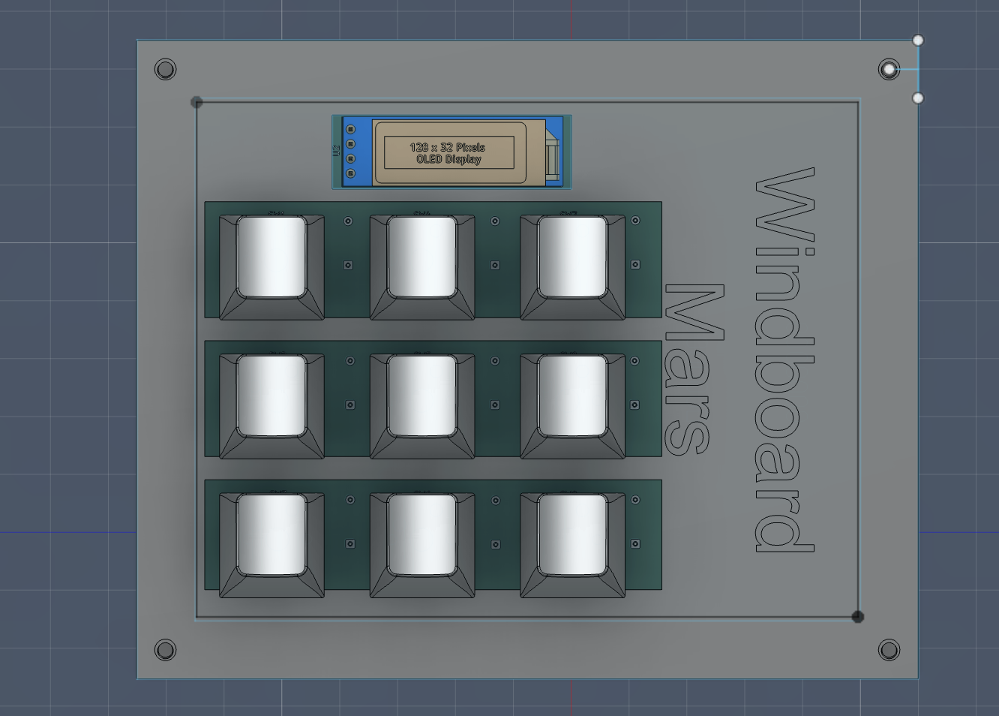
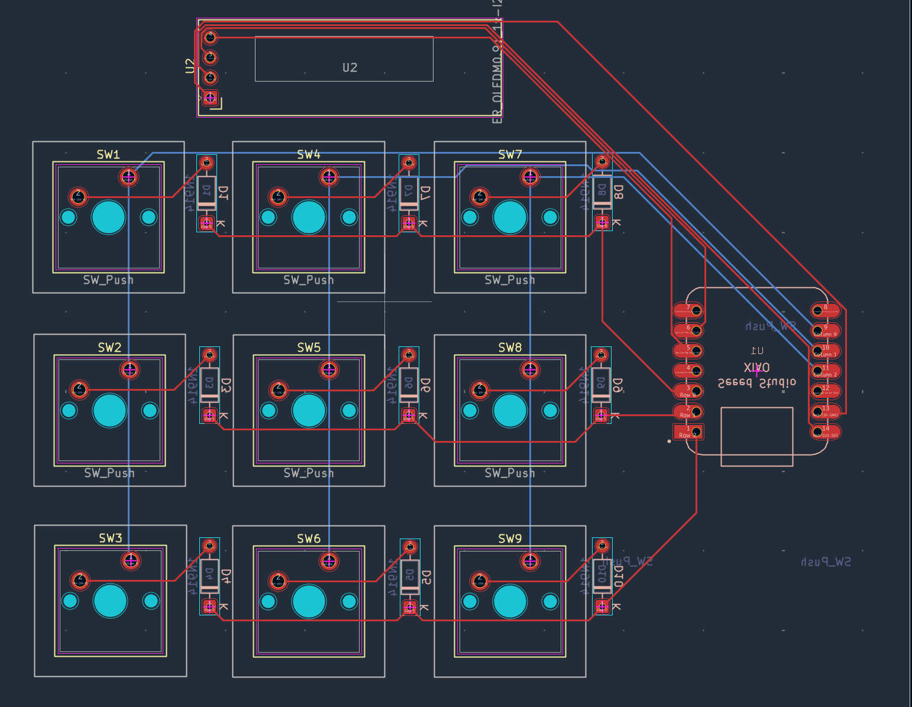

The Windboard
Home
Overview:
The windboard was a hackpad i designed for hack club stardance.
The purpose of the windboard was to make using keboard shortcuts easier.
I created a cutom PCB for it in Kicad which was the first time i used the software.
It also required fusion 360 as i had to design a case for it to fit in.
I ended up adding 9 buttons to it and an oled screen.
Because i decided on an oled screen it meant i had to use QMK as the firmware.
In the end though it was easy to use because of the good documentation.
Here were the features i added:
- Alt f4
- Win X
- Open Chrome
- Win D
- Undo Delete tab
- Open Github
- Open VS code
- Lock screen
- Open Steam
The oled screen for now displays my name
Image Gallery:



I havent assembled the Windboard yet but i will update the website when it is complete.